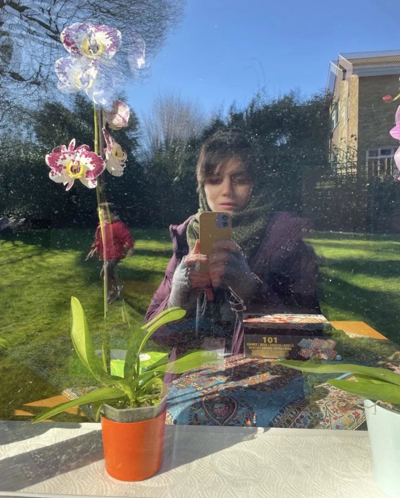

I'm a research associate at the University of Oxford, working on the Foundations of Longtermism project, funded by the Leverhulme Trust and led by Richard Pettigrew. Previously, I was a postdoctoral researcher at the University of Manchester (2025), where I worked on misinformation. I completed my PhD in philosophy at the London School of Economics, and in 2023–24 I was a pre-doctoral fellow at MIT. Before transitioning to philosophy, I earned an undergraduate degree in chemical engineering and a master's in Islamic studies.
What draws me to philosophy is the way it lets me approach the difficult questions that arise from life with clarity and rigor. I work at the intersection of mathematical philosophy and social and moral philosophy. I explore, and hope to keep exploring, how mathematical tools help us to come up with better philosophical questions and answer them better and faster.
My research has had four themes so far:
Demographic Profiling: I focus on the question of how we, as moral and rational agents, should engage with demographic statistics establishing that a negative trait is more common in one group than in others. For this purpose, I develop a framework that establishes norms for whether a bounded Bayesian should credally engage with a proposition at all. Then I use these norms to show that we are rationally permitted to suspend judgment on demographic statistics aligned with negative social stereotypes and avoid using them as evidence in decision-making. The conclusion is arrived at without any appeal to moral considerations and holds even when we don't have any strong evidence against those statistics.
Misinformation: I focus on the question of how our problematic engagement with misinformation can be explained. I show that we do not necessarily need to appeal to our lack of critical thinking or media literacy to explain why we make harmful decisions based on misinformation or why we resist changing our beliefs after receiving corrective information. For this purpose, I use decision theory and Bayesianism to show how an ideally rational agent can manifest these problematic engagements. I conclude that even a slight, nuanced and justifiable suspicion towards scientific institutions can explain these phenomena.
Longtermism: I focus on the moral disagreement over longtermism and use decision theory and tools from population ethics to analyze it. More specifically, I ask whether the catastrophic nature of human extinction, rather than its scale alone, drives longtermist intuitions, and how we should model that catastrophic nature.
Activism: I ask how a strategic activist should use moral arguments to invite others to take part in a social movement. I use decision theory along with moral psychology to explore this question. This work is inspired by my personal experience of being engaged in recent social movements in Iran.
In the past, I co-organized the Choice Group at LSE.
Email: somayeh.tohidi [at] philosophy.ox.ac.uk; s.tohidi [at] lse.ac.uk
Substack: substack.com/@somayehtohidi
Bluesky: @somayehtohidi.bsky.social
